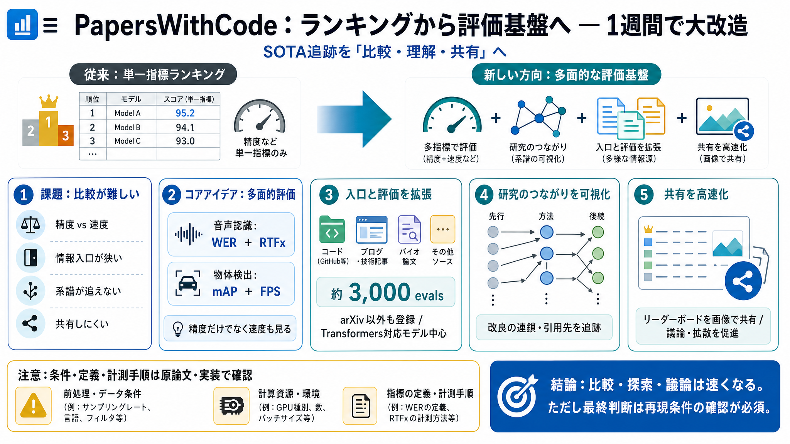

GitHub - paperswithcode/paperswithcode-client: API Client for paperswithcode.com · GitHub
Title: GitHub - paperswithcode/paperswithcode-client: API Client for paperswithcode.com · GitHub # paperswithcode.com AP…

Title: GitHub - paperswithcode/paperswithcode-client: API Client for paperswithcode.com · GitHub # paperswithcode.com AP…
You signed in with another tab or window. You signed out in another tab or window. You switched accounts on another tab …
Python client for paperswithcode.com API. # paperswithcode.com API client. This is a client for PapersWithCode. The API …
Title: paperswithcode · GitHub Topics · GitHub ## Navigation Menu. # Search code, repositories, users, issues, pull requ…
Title: GitHub - codingpot/paperswithcode-go: client code repository for paperswithcode's official APIs · GitHub ## Navig…